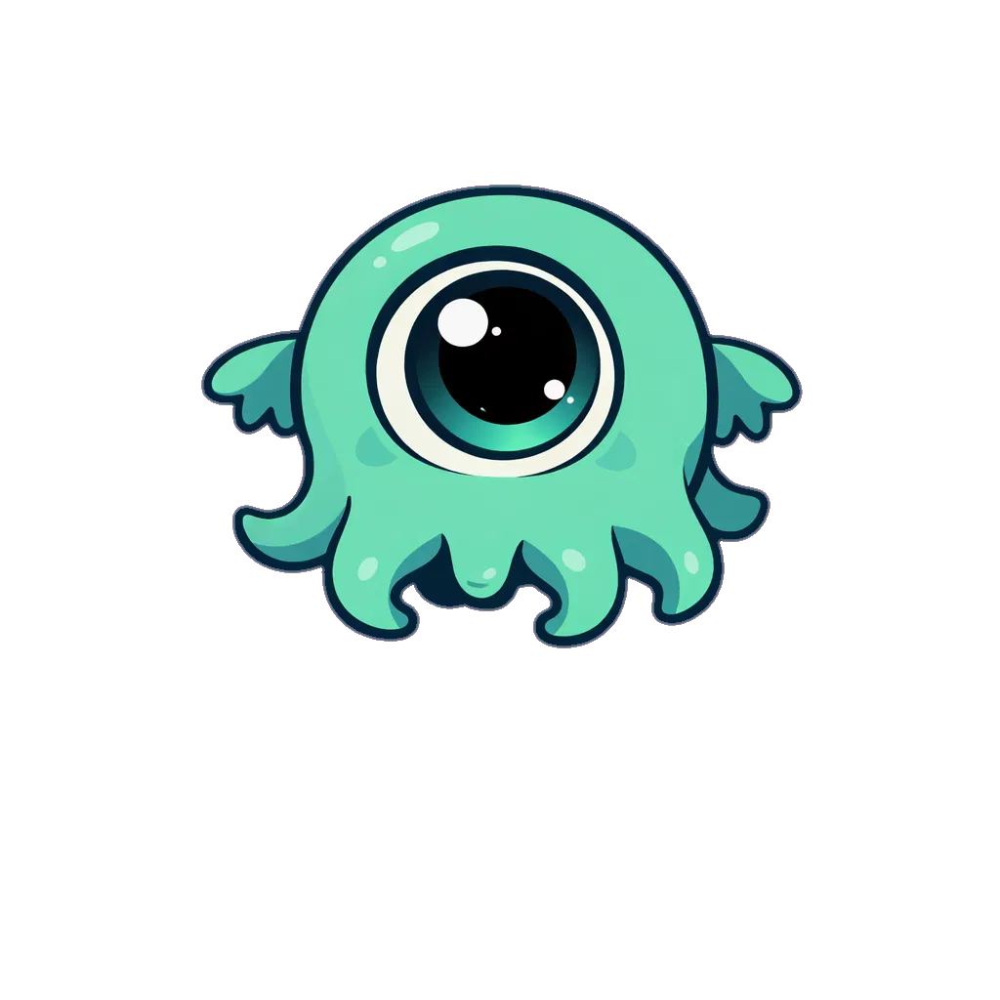
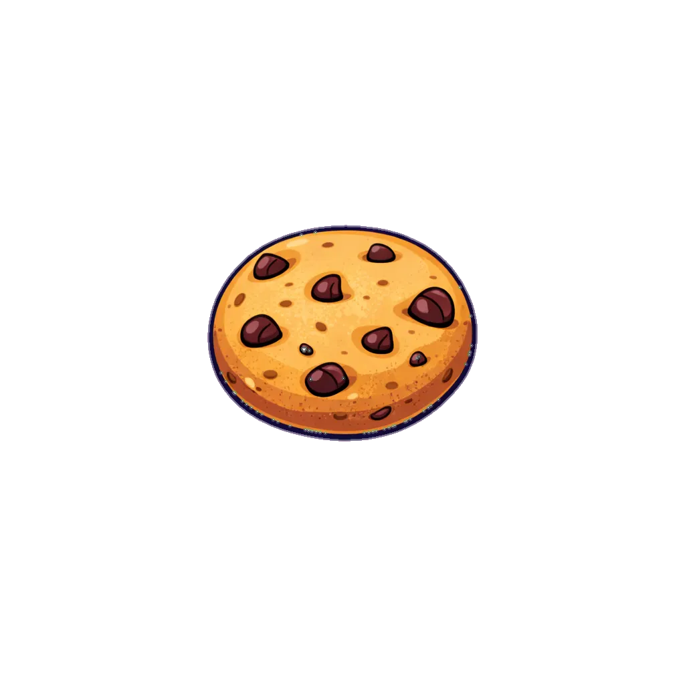

Bichinho Virtual Lovecraftiano
Estado: Feliz
Fome
Energia
Tempo sem comer: 0s
Clique na comida para alimentar sua criatura!

Bichinho Virtual © 2024 | RussiaZ/front-end
VOCÊ GANHOU +1 PONTO EXTRA! 🌟